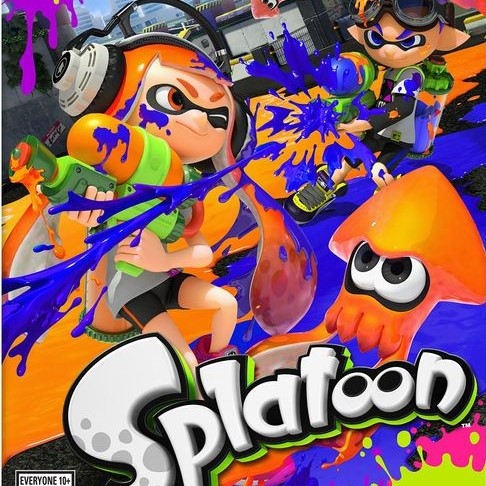

SPLATOON
2015년 Wii U로 발매된 TPS 물총싸움 게임.
닌텐도에서 기존의 게임이 아닌 완전히 새로운 게임을 만들기 위해 노력했다고 합니다.
E3에서 갑작스레 공개되어 큰 호응을 얻었으며, 게임 발매 후에는 스플래툰을 구매하기 위해 덩달아 Wii U와 다른 타이틀을 같이 구매하는 사례가 폭증하였습니다.
게임 내에 등장하는 캐릭터들은 모두 오징어, 말미잘, 새우, 해파리 등의 해산물이라는 점이 특징입니다.
주인공 잉클링(오징어)은 히어로가 되어 문어 군단을 막아 내기도 하고, 하이카라 시티에서 나와바리 대전과 축제를 즐기기도 합니다.
메인 컨텐츠인 나와바리 배틀은 바닥에 잉크(먹물)를 많이 칠한 팀이 승리합니다. 오징어와 인간을 자유자재로 변신하며 잉크 안을
빠른 속도로 헤엄치며 잉크(탄환 개념)를 충전할 수 있고, 잉크를 적에게 맞추면 상대를 터트릴 수도 있습니다.
적을 많이 죽이지 못하더라도 바닥을 열심히 칠하면 어느정도 팀에 기여할 수 있기 때문에 진입장벽이 낮으며, 캐릭터와 음악도 귀엽고 수작이라는 평이 많습니다.